NASA SPACE APPS CHALLENGE 2026PROJECT REPORT · NOVEMBER 2026
SPHEREx Blink Tree
Watch the infrared sky as a film and catch what moves or changes.
Type a position or an object name. The tool reads every image NASA’s SPHEREx telescope has taken of that spot live from the archive, lines them up and plays them as a short film. Click a star and its 0.75–5 µm spectrum and light curve are drawn at once.
5 / 5test targets work in the tool
102infrared colours, 0.75–5 µm
< 1%of each 65 MB file is read (3′ field)
0.4–0.8″median position difference from Gaia
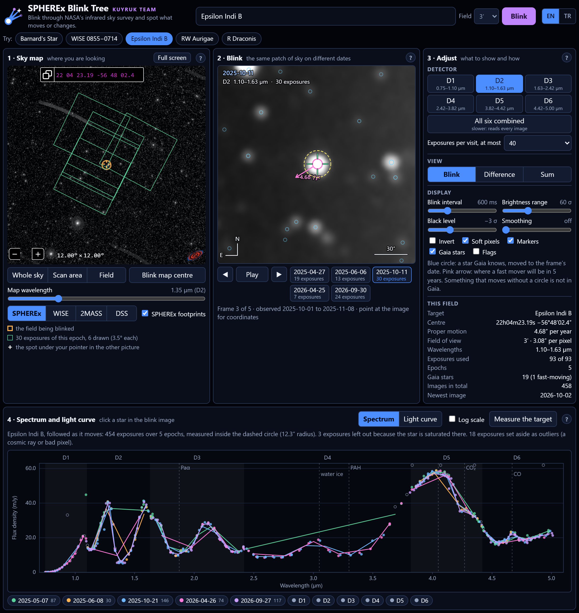
TEAMKuyruk TeamCuma Doğan
CHALLENGEA public web tool that brings SPHEREx images to life over time
The challenge was to do for SPHEREx what WiseView does for WISE: show the same patch of sky on different dates, one after another.
What was asked?
SPHEREx is a NASA space telescope that maps the whole sky in 102 infrared colours (0.75–5 µm). It returns to the same spot about every six months; its data are public and updated every week.
The brief: the user enters a position and the tool shows the SPHEREx images of that patch of sky one after another, like a little video, so that objects that move or change brightness are easy to spot.
Five test targets were given: Barnard’s Star, Epsilon Indi B, WISE 0855, RW Aurigae and R Draconis.
Our answer
SPHEREx Blink Tree is a web page. You type a position or an object name; the tool finds every SPHEREx image that contains that spot, reads only the pixels it needs, lines them up on the sky, stacks them visit by visit and plays them as a film.
Nothing is computed in advance: for every field the tool asks the archive. So it works anywhere on the sky and stays current as new data arrive.
The interface is in English and Turkish. Four numbered boxes lead the user from the map to the film, and from the film to the spectrum.
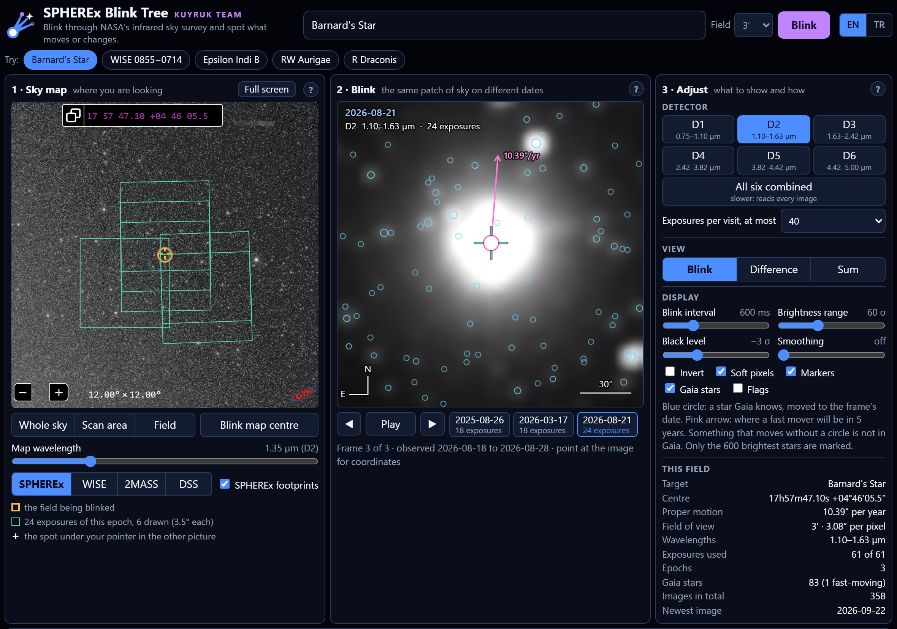
The main screen: Barnard’s Star in detector D2 (1.10–1.63 µm). Blue circles are stars Gaia knows; the pink arrow shows where the star will be in five years. On the map at the left, the green squares are the footprints of six of the 24 SPHEREx exposures of that visit.
1Sky mapShows where you are looking and how the telescope scanned that spot; a slider steps through the 102 channels.
2BlinkThe same patch of sky on different dates. Difference removes what does not change; Sum gives a deeper image.
3AdjustSix detectors, field of view, contrast, Gaia stars and SPHEREx’s own quality flags.
4Spectrum and light curveClick a star to draw its 0.75–5 µm spectrum and how its brightness changed over time.
github.com/CumaDogangithub/nasa_space_apps2 / 7
SPHEREx Blink TreeNASA Space Apps Challenge 2026
2How it works
A plain page in the browser, a small Python server and NASA’s open archives. There is no store of ready-made images in between.
Browserplain HTML + JavaScript, nothing to install
blink · difference · sum
contrast and smoothing
spectrum and light curve
sky map (Aladin Lite)
position, field, detector
raw numeric frames
ServerPython · FastAPI + astropy
image search
alignment and stacking
brightness measurement
disk cache
IRSA image search (SIA2)“Which images cover this spot?” · 1–5 s
Open SPHEREx data on AWS S3only the bytes needed · HTTP range requests
ESA Gaia DR3 · SIMBADstar positions, proper motions, names
Find the images. IRSA’s image search service lists every SPHEREx image whose footprint contains the spot, in 1–5 seconds.
Read only the pixels needed. Each image is a 62–66 MB file. The server does not download it; it reads the header and the rows around the target with HTTP range requests. For a 3′ field about 0.4 MB per file is enough: less than 1% of the file.
Align. Each small window is moved onto a common north-up grid using the image’s own astrometry, and its local sky brightness is removed.
Group into visits and stack. A gap of more than 15 days starts a new visit (epoch). Within an epoch all exposures of one detector are averaged with outliers rejected; saturated star cores are marked rather than averaged.
Show. The browser receives raw numeric frames and does the contrast, blinking, difference and sum itself, so the controls respond instantly.
Spectra without a spectrograph
SPHEREx has no prism. The colour passed by the filter in front of each detector changes smoothly across the detector, and as the telescope steps between exposures a star lands on a different colour each time. The tool measures the clicked spot in every exposure of all six detectors, inside a circle of 12″ radius, and looks up each exposure’s wavelength in the detector’s own table. Put together, the points form a spectrum from 0.75 to 5 µm.
For the light curve every exposure is divided by the star’s own average at the same wavelength, so a red star does not seem to vary just because different visits sampled different wavelengths.
Why it is always current
The tool keeps no store of ready-made images; it asks the archive what exists now and reuses the answer for a day at most. Images added each week appear by themselves. A new data release takes one line: its collection name in releases.json.
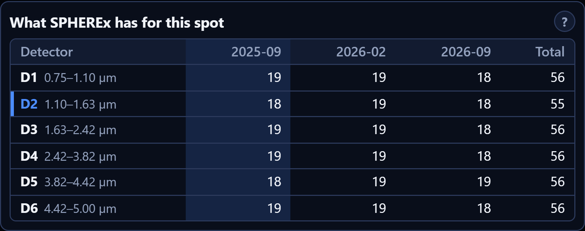
What the archive holds for one spot: exposures per detector and visit (RW Aurigae). Clicking a row blinks that detector.
1–5 sto search the archive
≈ 0.4 MBread per file (3′ field)
5–30 sfirst view of a new field; then instant from the cache
6.15″size of one SPHEREx pixel on the sky
github.com/CumaDogangithub/nasa_space_apps3 / 7
SPHEREx Blink TreeNASA Space Apps Challenge 2026
3Results: things that move
All five test targets work in the tool. Every picture on these two pages is a screenshot of the tool itself.
Barnard’s Star
the fastest star in the sky
SPHEREx visited this star three times: August 2025, March 2026 and August 2026. Between the first and the last visit it moved about 10″ north. In the difference image its old place is dark and its new place bright; the pink arrow shows where the motion measured by Gaia will take it in five years.
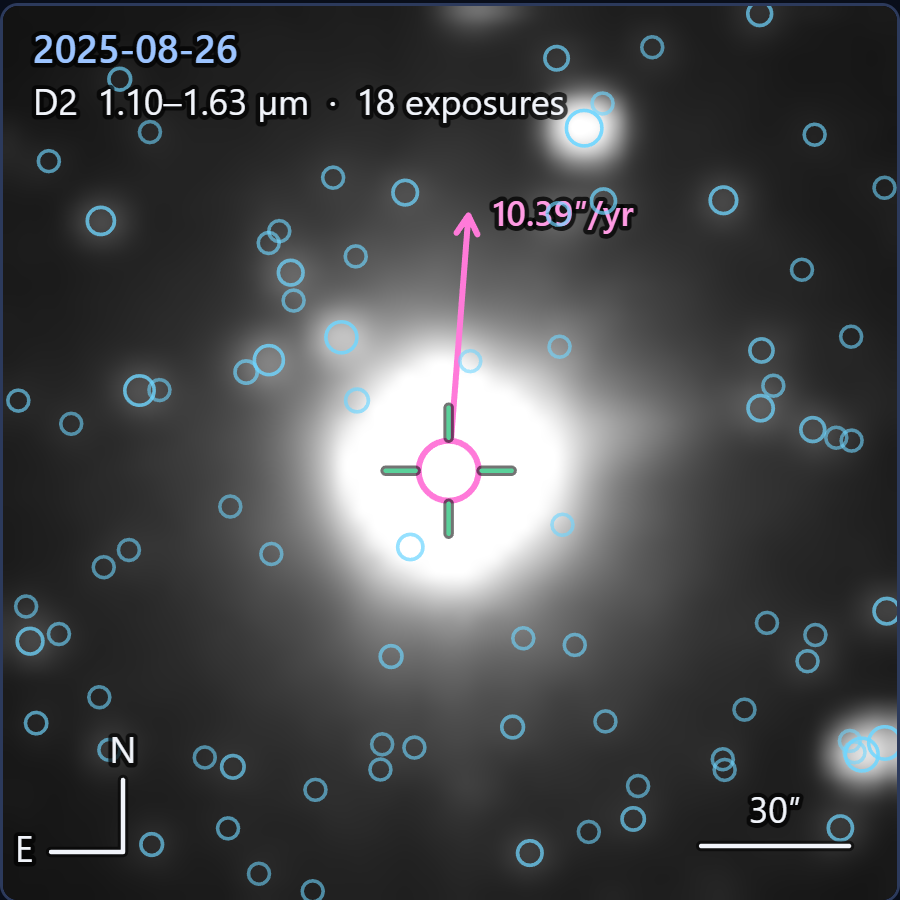
26 August 2025
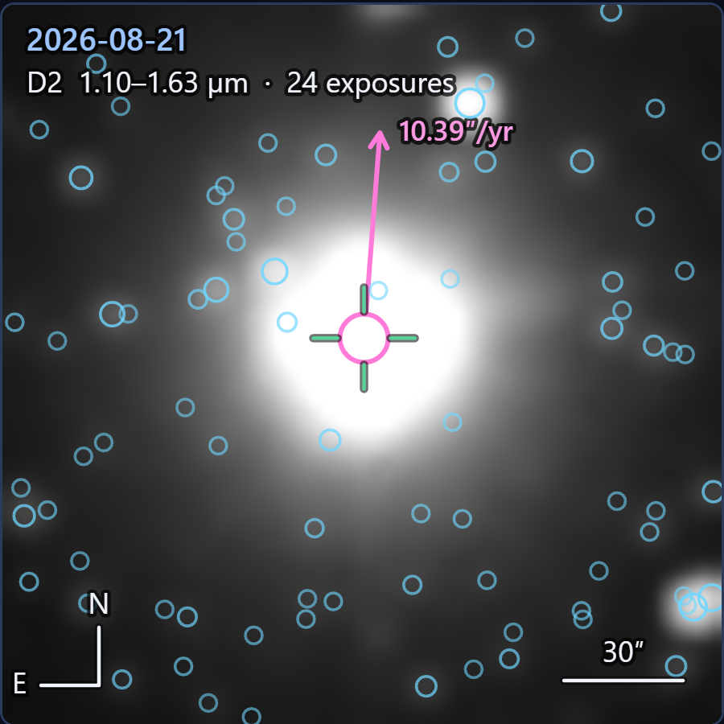
21 August 2026
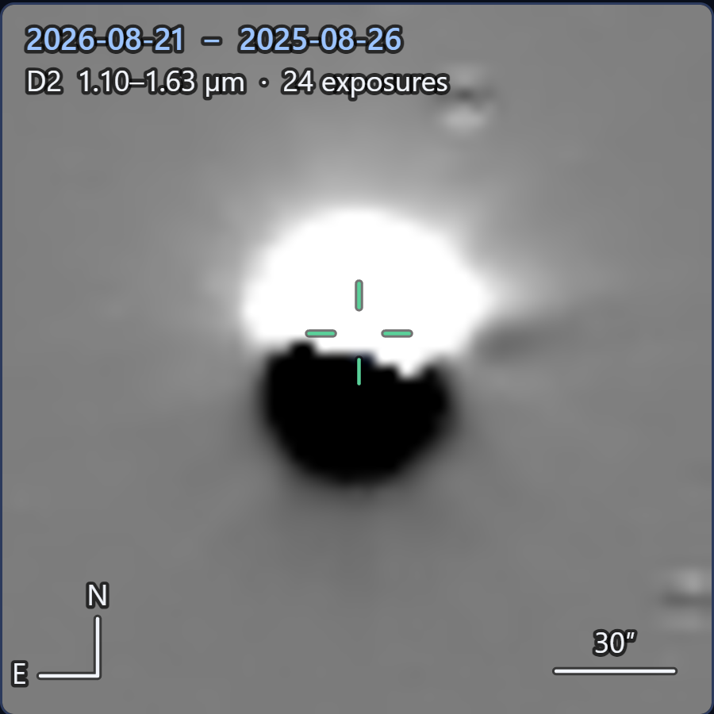
difference: last visit − first visit
10.4″motion per year
≈ 1.7 pixelsshift between the first and last visit
358images in the archive
WISE 0855−0714
the coldest known brown dwarf
The coordinates in the brief are where it was in 2010; it moves 8.1″ a year, so it is now about 2′ further west, and the tool centres the field on where it is today. The dwarf shows up only in detector D6. In the difference image the fixed stars cancel and the dwarf leaves a dark–bright pair along its motion.
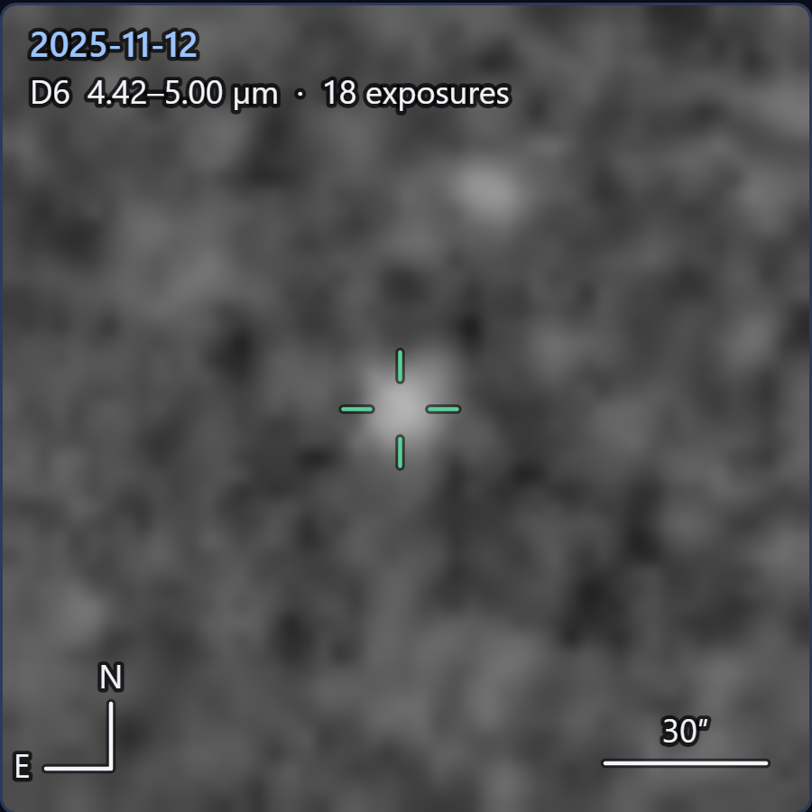
12 November 2025 · D6
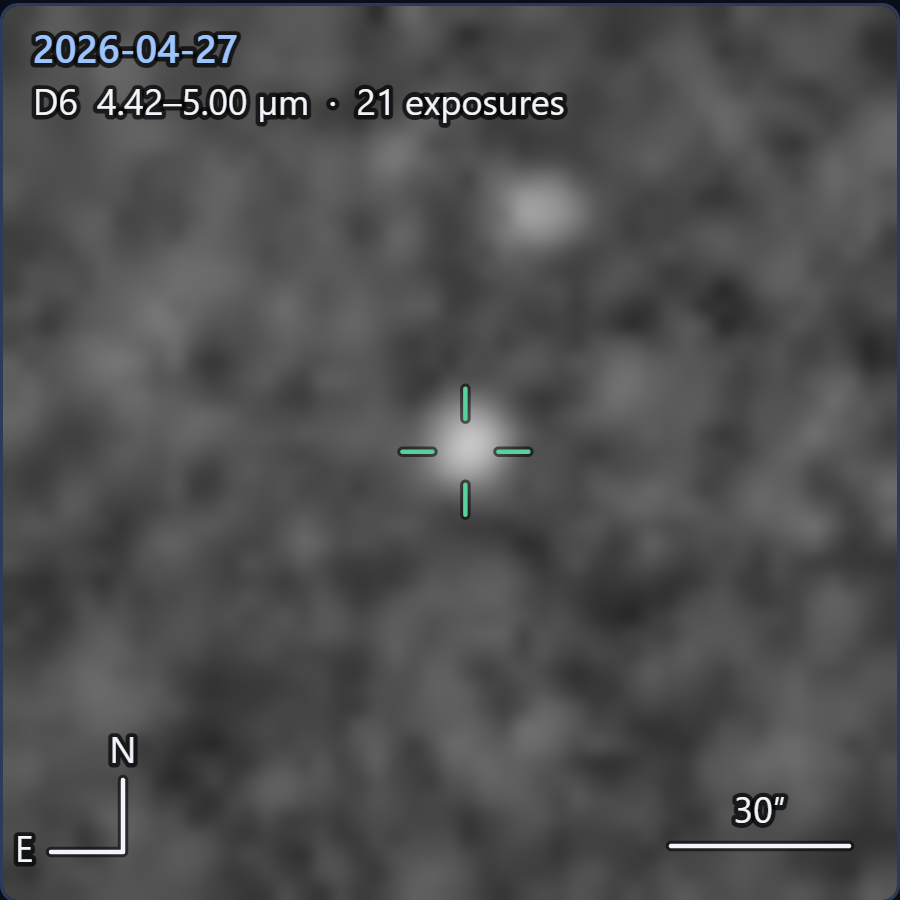
27 April 2026 · D6
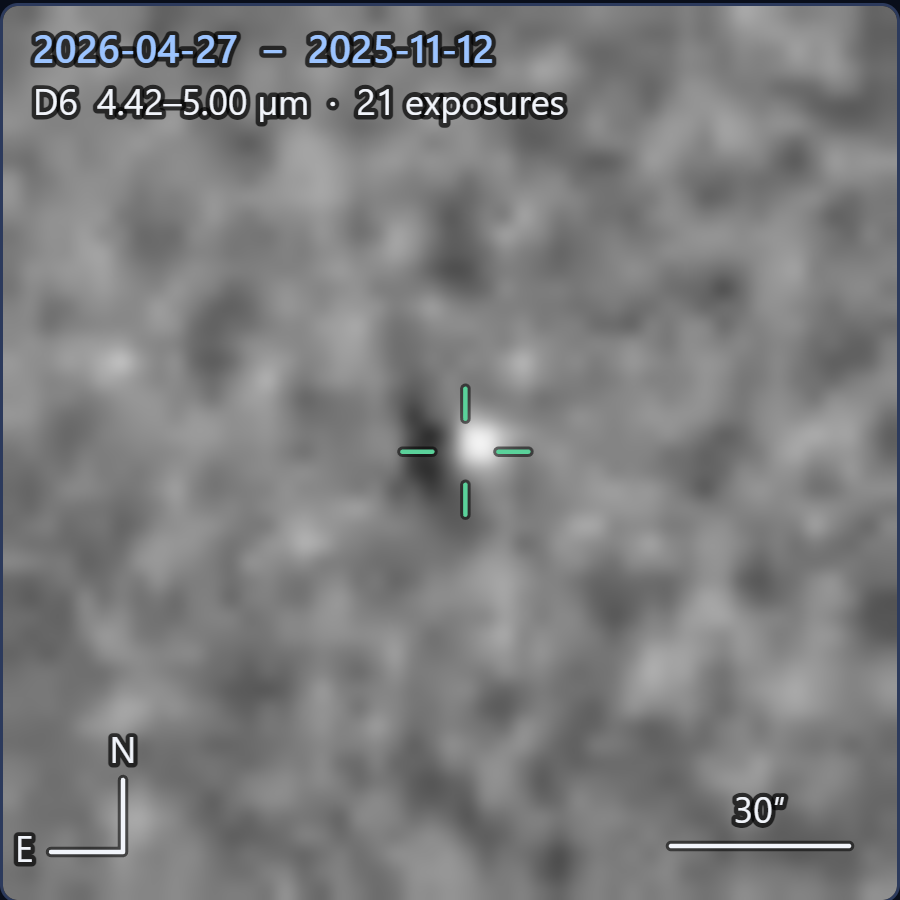
difference: April − November
D6visible only at 4.42–5.00 µm
8.1″motion per year
≈ 2′from its 2010 position
Epsilon Indi B
a pair of brown dwarfs
The tool followed the object through five visits and measured it in 454 exposures. The spectrum has peaks near 1.3, 1.6, 2.1 and 4 µm with deep dips between them: the signature of water vapour and methane in a brown dwarf’s atmosphere. No ready-made spectrum file was used; every point was measured from the images on the spot.
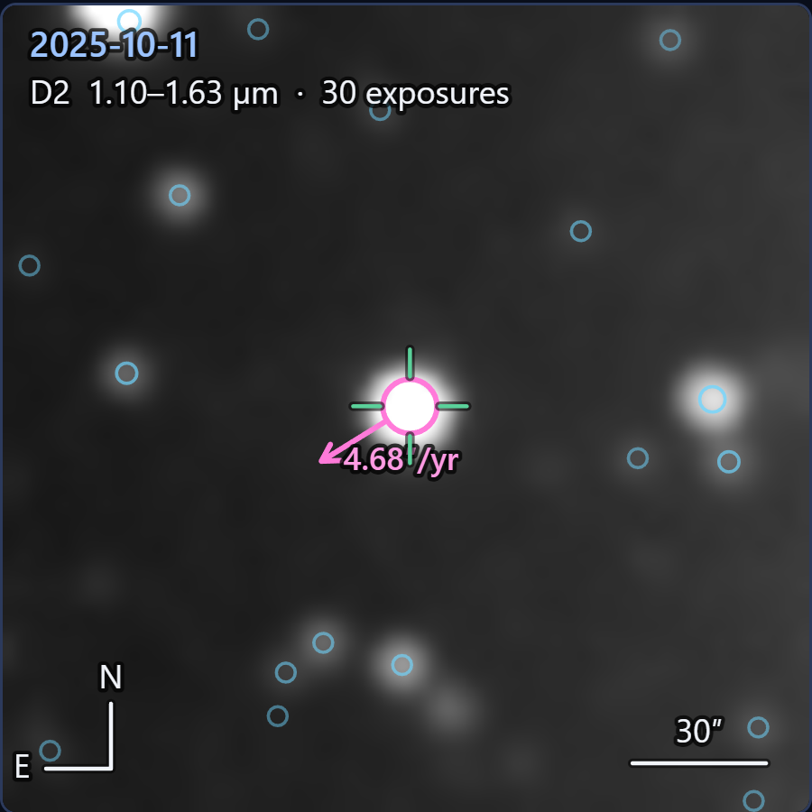
11 October 2025 · Gaia arrow
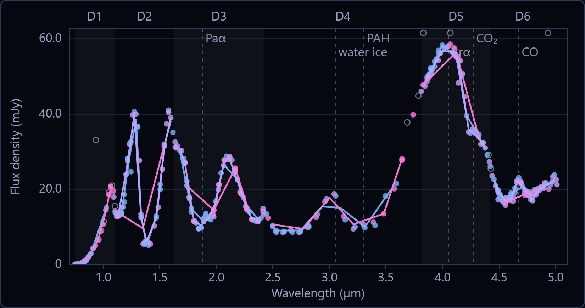
spectrum; colours are visits (the three best sampled)
454exposures in the spectrum
4.7″motion per year
≈ 58 mJybrightest near 4 µm
github.com/CumaDogangithub/nasa_space_apps4 / 7
SPHEREx Blink TreeNASA Space Apps Challenge 2026
4Results: things that change
Because every exposure sees the star at a different wavelength, the tool shows change not only over time but also by colour.
RW Aurigae
a young star that varies irregularly
The tool measured the star in 332 exposures over three visits (September 2025, March 2026, September 2026). Within a year its brightness at 3.8–5 µm fell to about half (2900 → 1500 mJy at 4.4–5 µm), while at 0.75–1.1 µm it rose about 1.5 times. A tool that looks in one colour would see only one side of this change.
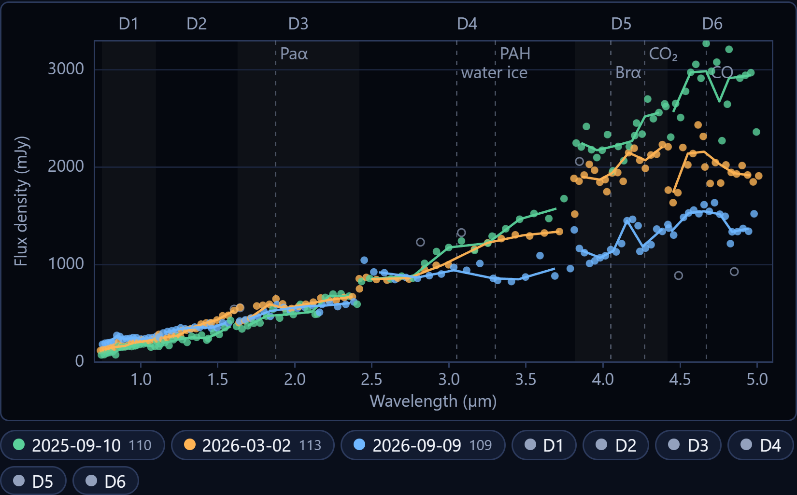
Spectrum coloured by visit: the three visits separate at long wavelengths.
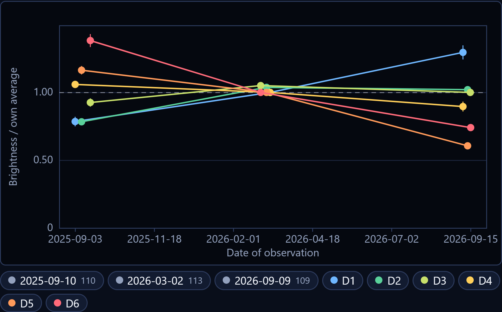
Light curve coloured by detector: D5 and D6 fade while D1 brightens (1 = the star’s own average).
R Draconis
a red giant that pulsates every 245 days
It lies close to the northern deep field, so SPHEREx watches it almost continuously. It is too bright for SPHEREx: its core is saturated in 591 of the 592 exposures read. The tool notices this and measures the light in a ring around the core instead, 25–43″ from the centre. That light changes by more than a factor of two from visit to visit.
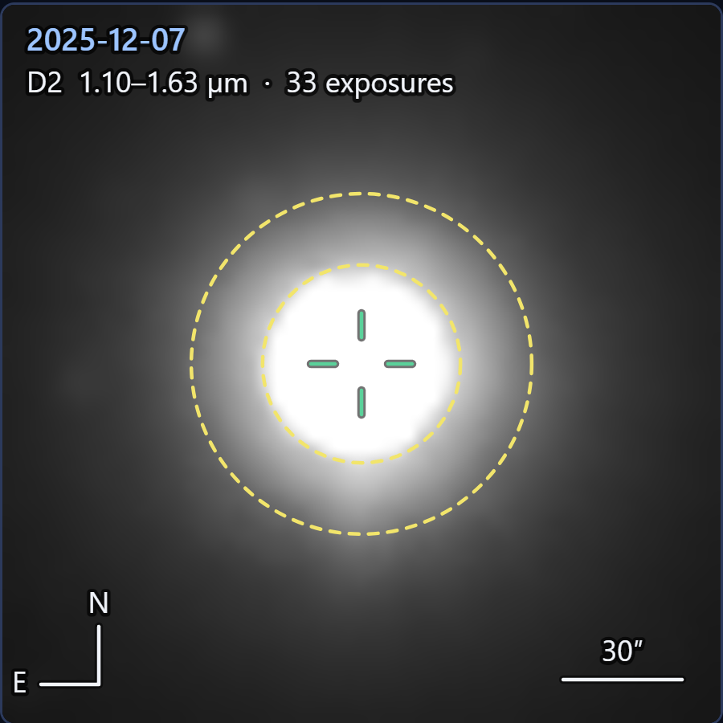
7 December 2025 · circles: the ring
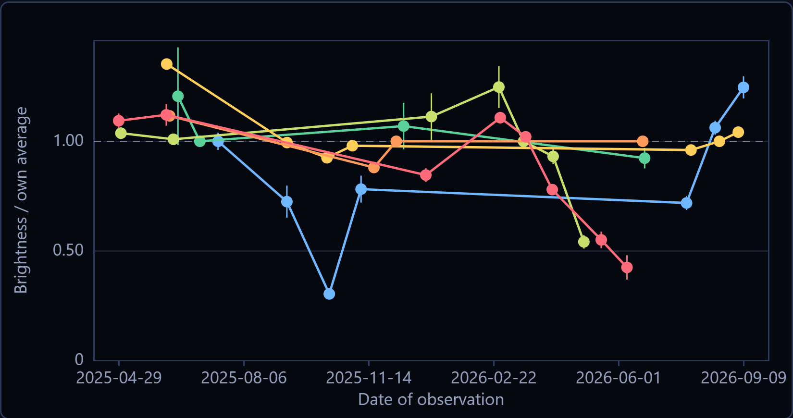
light in the ring over time; colours are detectors
2493images in the archive
591 / 592exposures with a saturated core
25–43″the ring that is measured
The five targets at a glance
Target
Images in the archive
Visits in the film
What the tool shows
Barnard’s Star
358
3
a 10″ shift north in one year, where Gaia predicts
WISE 0855−0714
258
4
visible only in D6; a motion trace in the difference image
Epsilon Indi B
458
5
motion and a brown-dwarf spectrum
RW Aurigae
335
3
fades by half at 4–5 µm, brightens at 1 µm
R Draconis
2493
5
saturated core; light curve from the ring around it
3902 images in total. “Visits in the film” is the number of frames in the target’s default detector (D6 for WISE 0855, D2 for the others).
github.com/CumaDogangithub/nasa_space_apps5 / 7
SPHEREx Blink TreeNASA Space Apps Challenge 2026
5Beyond the brief, and is it right?
The brief listed eight optional features. All eight are in the tool.
Easy update for new data releases
Nothing is pre-computed; new images appear by themselves. A new release is one line in releases.json.
Creative use of the 102 bands
Six detectors are stacked separately or together; the map steps through 102 channels; a click gives a star’s spectrum.
Add and subtract epochs
Difference subtracts a chosen visit; Sum averages them all.
Selectable field of view
From 1′ to 30′; the pixel scale adapts as the field grows.
Gaia and WISE overlays
Gaia DR3 stars are drawn at each frame’s date; the map has WISE, 2MASS and DSS layers.
Coordinates in the URL, embedding
The whole view is in the address (position, field, detector, mode, language); embed=1 puts it in another page.
Contamination flags and metadata
SPHEREx’s quality flags are painted on the frame and explained in plain words; every exposure is listed with its time and file.
astropy and Aladin Lite
The server reads and aligns with astropy; the sky map is Aladin Lite.
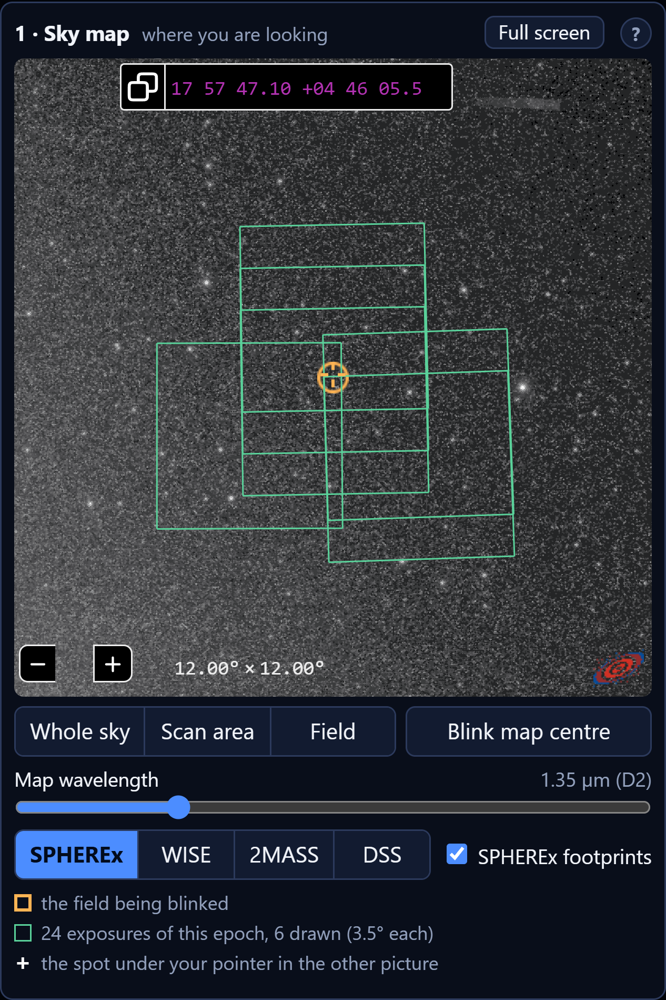
The sky map: the orange mark is the field being blinked, the green squares are a few of the SPHEREx exposures of that visit.
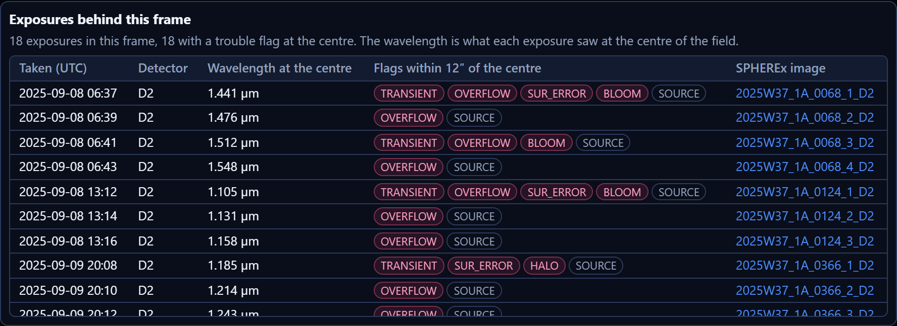
With Flags on, every exposure behind the frame is listed: when it was taken, the wavelength it saw at the centre of the field, SPHEREx’s flags and a link to the original file.
Extras that were not on the list
English and Turkish interface
Offline demo that runs without the server
Search by object name (SIMBAD)
Ring photometry for saturated stars
Linked pointer between map and film
Keeps working when the archive’s search is down
Is it right?
0.4–0.8″median position difference from Gaia DR3In three 6′ test fields (D2) we compared where stars should fall in a frame with where they appear. The difference is a small fraction of a 6.15″ SPHEREx pixel.
0.94 · 1.01 · 0.97SPHEREx / 2MASS brightness ratio (J, H, Ks)Five ordinary stars near RW Aurigae were measured the same way and compared with the 2MASS catalogue.
5–30 sfirst view of a new fieldIt depends on the width of the field and the number of detectors read. Results are cached; the second view is instant.
Honest limits. The brightness values are quick-look numbers: neighbours inside the measuring circle add to the result, and no correction is made for light that falls outside it. A SPHEREx pixel is 6.15″, so objects very close together cannot be separated. The cores of very bright stars saturate; for them only the light in the ring can be followed.
github.com/CumaDogangithub/nasa_space_apps6 / 7
SPHEREx Blink TreeNASA Space Apps Challenge 2026
6Who it is for, how to run it, what is next
The tool works today: three commands to install, one minute to try.
Who is it for?
Volunteer astronomersThey can look for nearby, cold, fast-moving objects in SPHEREx’s 102 colours, the way they know from WiseView.
Students and teachersThey can show “do stars move?” and “what is a spectrum?” with real space data.
ResearchersThey can check every SPHEREx visit of a source, its spectrum and its quality flags in a few seconds.
How to run it
Python 3.10 or newer is enough (on macOS and Linux use .venv/bin/python):
Then open http://localhost:8000 in a browser. To look without installing anything, just open web/index.html: the five test targets are shown from recorded data.
Try it in one minute
Press WISE 0855−0714 at the top: the film starts in detector D6.
Switch to Difference (key D): the fixed stars cancel, the dwarf stays.
Choose Epsilon Indi B and press Measure the target: its spectrum is drawn.
For RW Aurigae switch to Light curve: watch it fade within a year.
On the map, move the Map wavelength slider: the sky in 102 colours.
Keys: space play/pause · ← → step · 1–6 detector · D difference · G Gaia · F flags
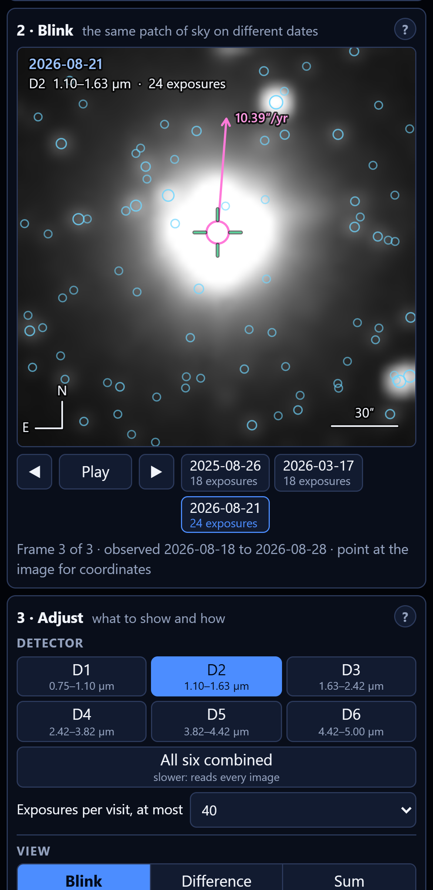
The same tool on a phone or tablet: the boxes stack.
What is next?
Use the quality flags to clean the spectra automatically
Label known asteroids in the frames
Read large fields faster
Put the tool on a public server
Built with
Python 3.10+FastAPIastropyNumPy · SciPyHTML + JavaScript (no build step)Aladin Lite
Data and acknowledgements
This project uses data products from SPHEREx, a joint project of the Jet Propulsion Laboratory and the California Institute of Technology funded by NASA, obtained from the NASA/IPAC Infrared Science Archive (IRSA). Positions and proper motions come from the ESA Gaia mission (DR3) and the SIMBAD database. The sky map is Aladin Lite (CDS, Strasbourg). The interface is modelled on WiseView and on IRSA’s SPHEREx Data Explorer.
Use of AI. The code and this report were developed with the help of an AI coding assistant (Claude). The measurements were checked against the Gaia DR3 and 2MASS catalogues.
SPHEREx Blink TreeThe infrared sky as a film: one position, one click.
github.com/CumaDogangithub/nasa_space_appssource code and setup